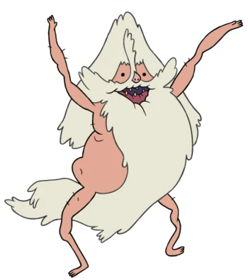

Você derrotou o Mago da Floresta e está se sentindo bem
Alguns magos chegam a sair da sua frente com medo.
Até que voce escuta um grito longe:
a a a a aaaaaaAAAAAAA
EU TO PELADOOOOO
O grito fica cada vez mais próximo. Você olha pra trás e vê
Um maracujá de gaveta sem roupas
O que você vai fazer agora?

1 - Imediatamente coloca às mãos nos olhos para não ter que ver essa cena
2 - Enche os pulmões e assopra o ar mais gelado possível
3 - Agarra a barba dele e puxa pra tentar amarrar o maluco com ela.